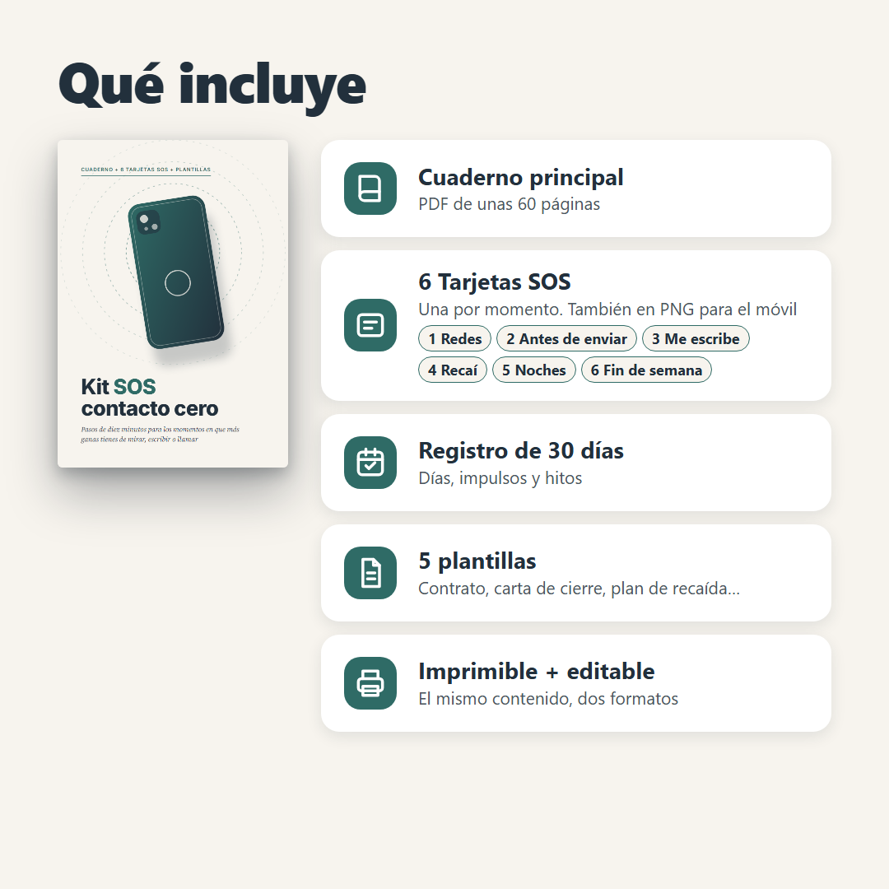
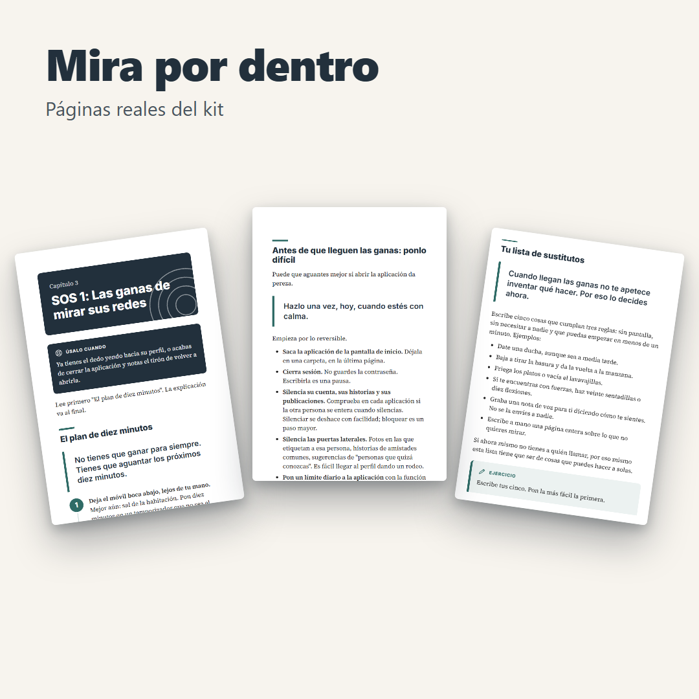

Sirve a: persona de las primeras semanas tras una ruptura. Ángulo: kit por momento de impulso.

Kit SOS contacto cero
Pasos de 10 minutos para los momentos en que más ganas tienes de mirar, escribir o llamar.
- Un paso a paso para cada momento difícil: redes, escribir, mensaje de esa persona, recaída, noches y fin de semana.
- Corto y a mano: seis tarjetas que guardas en el móvil para abrirlas cuando llegan las ganas.
- Lo dejaras tú o te dejaran: el kit no da por hecho qué quieres hacer con esa persona.
14,99 €
IVA incluido · bloque de precio automático del tema · Descarga inmediata
Comprar el kit completo
Incluye
- 6 tarjetas SOS + 5 plantillas
- Cuaderno principal en PDF (unas 60 páginas)
- Registro de 30 días
- Versión imprimible y editable
PENDIENTE MÓDULO 7 condiciones y desistimiento. Precio inicial [ESTIMACIÓN].
¿Te suena alguno de estos momentos?
- ¿Te encuentras con el dedo camino de su perfil y no sabes cómo parar?
- ¿Escribes un mensaje, lo borras y vuelves a escribirlo?
- ¿Te ha llegado un mensaje de esa persona tras un tiempo de silencio y no sabes qué decidir?
- ¿Has vuelto a escribirle y sientes que lo has estropeado todo?
- ¿Las noches se te hacen largas y los fines de semana, peores?
- ¿Te has dicho "esta vez sí" y a las pocas horas estabas otra vez mirando?
No es falta de fuerza de voluntad. Son momentos concretos, y para cada uno hace falta algo concreto que hacer.
No es otro diario de 30 días: el registro está, pero el centro son los momentos
La crisis no llega según el calendario: llega a las 23:40 con el móvil en la mano.
El kit está organizado por el momento en que te cuesta. Eliges el momento, lees los pasos cortos y haces lo que dicen. La explicación va al final.
- Las ganas de mirar sus redes
- Antes de enviar
- Me escribe
- Recaí
- Noches y mañanas
- El fin de semana
Qué no es: no es terapia, ni consejo médico, ni un plan de seguridad. No promete que esa persona vuelva ni que te sientas de una forma concreta en un plazo.
Antes de comprar: esto no sustituye a una persona
Pide ayuda a una persona, no a un PDF, si llevas varios días sin dormir o sin comer con normalidad, sientes que no puedes más o piensas en hacerte daño, o tienes miedo de la otra persona.
- Emergencias: 112
- Conducta suicida: 024
- Violencia contra las mujeres: 016. El 016 atiende la violencia contra las mujeres. Si eres hombre y sufres violencia de pareja: 112 u Oficinas de Asistencia a las Víctimas del Delito
Si no estás en España, busca la línea de tu país.
Qué incluye exactamente
Cuaderno principal
PDF de unas 60 páginas: primeros 7 días, los seis momentos SOS, cortar el bucle mental, hitos y cuándo pedir ayuda.
6 tarjetas SOS
Una página cada una, máximo 5 pasos. También en PNG.
Registro de 30 días
Días, hitos semanales y la hoja de disparadores para anotar cada impulso.
5 plantillas
Contrato de no contacto, carta de cierre que no se envía, plan de recaída, de fin de semana y "antes de enviar".
Dos versiones
Imprimible (A4) y editable en pantalla.
Lo lees en móvil, tablet u ordenador. Descarga inmediata. Si no te llega: correo de soporte PENDIENTE
Mira por dentro

No tienes que ganar para siempre. Tienes que aguantar los próximos diez minutos. 1. Deja el móvil boca abajo, lejos de tu mano. Mejor aún: sal de la habitación. Pon diez minutos en un temporizador que no sea el móvil.
¿Muestra gratis o kit completo?
Lo gratis te explica qué es el contacto cero; el kit te dice qué hacer a las 23:40, en 6 tarjetas.
Preguntas frecuentes
¿Es para mí si me dejaron a mí?Sí. El kit no da por hecho quién terminó ni qué quieres hacer después, y hay una guía para quien decide respetar que le hayan pedido distancia.
¿Y si la relación era dañina?Hay un aviso al principio con teléfonos de ayuda. El kit no es un plan de seguridad.
¿Me ayudará a recuperar a esa persona?No. No prometemos ningún resultado con la otra persona.
¿Es terapia?No. No sustituye a un profesional.
¿Cuándo lo recibo?Al instante tras el pago.
¿Puedo imprimirlo?Sí, hay versión en A4.
Garantía y condiciones
PENDIENTE MÓDULO 7 desistimiento en contenido digital, garantía, IVA y condiciones.